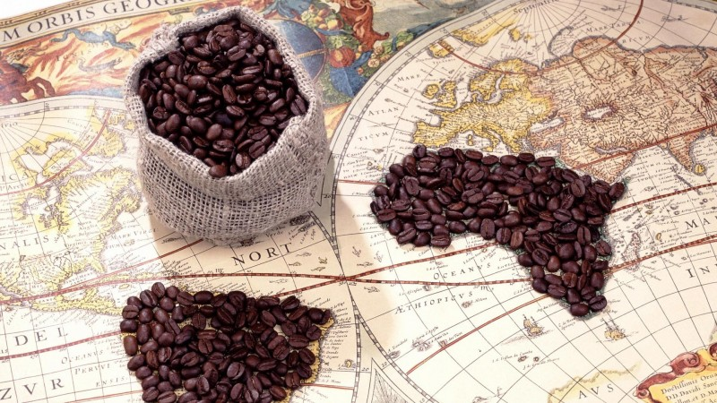
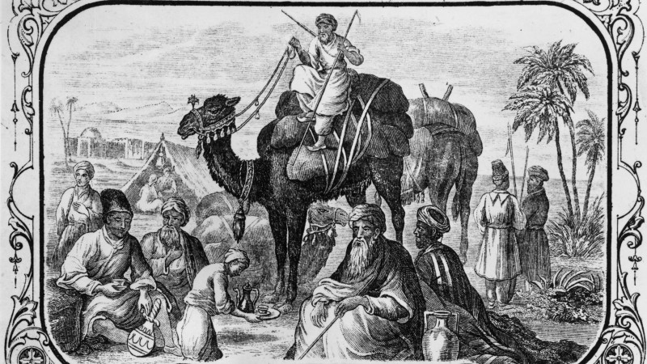
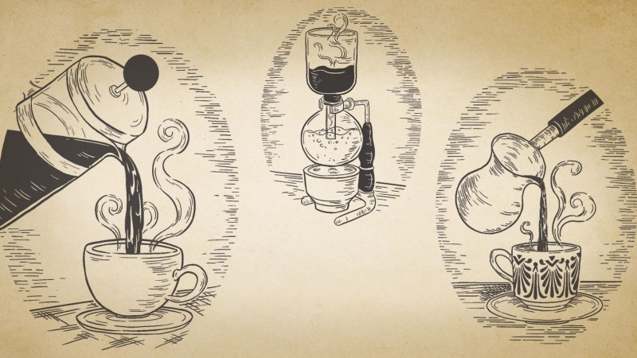
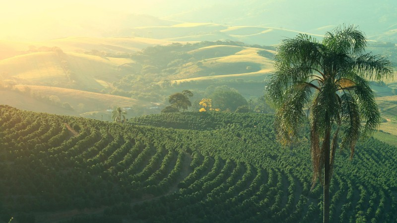
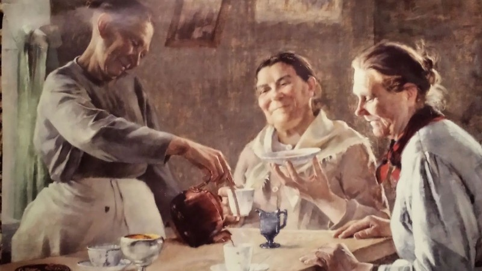

Кофе хаанаас гаралтай вэ?

IX зууны үед Этиопийн нэгэн ямаачин нэг бутлаг ургамлын жимс идсэн ямаанууд нь сэргэг,
сэргэлэн болж байхыг анзаарснаар анх кофе хэмээх ургамалтай хүн төрөлхтөн танилцах боломж
нээгдсэн гэдэг. Ямаачин залуу өөрөө тус ургамлын жимсийг идэж үзэхэд мөн хамаг биеийг нь
сэргээж байсан учир нутгийнхаа сүмийн ламд жимснээс өгчээ. Лам жимсийг тоолгүй шатаахаар
гал руу хийж орхитол бусад лам нарын анхаарлыг татахуйц сайхан үнэр сэнгэнэсэн байна.
Тиймээс хуурсан шош шиг болсон уг жимсийг үнснээс нь гаргаад аягатай халуун усанд хийснээр
кофе хэмээх ундаа үүсжээ. Мэдээж түүхчид уг түүхийг яг таг үнэн гэдэгт эргэлздэг байна.
Харин хамгийн анхны инстант буюу найруулж уудаг кофе 1771 онд Англид үүсжээ.
Кофе хэрхэн дэлхий даяар тархсан бэ?

Кофег анх Этиопоос Йемен рүү худалдаалдаг байсан бөгөөд Йемений худалдаачид кофены бутыг
эх нутагтаа авчран тариалж эхэлжээ. Исламын шашны Суфи урсгалын сүсэгтнүүд кофе ууснаар
залбирал мөргөлдөө илүү төвлөрч, бурхныг илүү сүнслэг магтахад тусалдаг хэмээн үзэж уудаг байв.
Ингээд кофе Багдад, Дамаск, Каир, Константинополь зэрэг том хотуудаар тархаж, 1414 он 1500 оны
эхэн үед Египетийн Мамлюк, Хойд Африкийн зах хязгаар хүртэл тархсан байлаа. 16-р зууны үед кофе
Ойрх Дорнодод хүрээд байсан бөгөөд цааш Италиар дамжин Европт тархжээ. Газарзүйн их нээлтийн үеэр
европчууд шинэ тивд аваачсан нь тодорхой.
Кофены төрлүүд

Латте, эспрессо, капуччино гээд олон төрлийн нэртэй кофенууд бий. Эспрессо гэдэг нь нэг төрлийн
хар кофе юм. Эспрессо суурьтай үндсэн 12 төрлийн кофе байдаг бөгөөд орц, найрлага зарим нь
хэмжээгээрээ л ялгаатай байдаг байна. Эспрессо суурьтай кофе нь эспрессо, сүү, хөөс гэсэн үндсэн
гурван орцоос бүрддэг. Хэрэв та кофе шопд ороод эспрессо захиалбал танд жижиг аягатай хар кофе авчирч өгнө.
Харин Double espresso гэвэл том аягатай хар кофе болох юм. Ер нь long, double зэрэг үг орсон байвал
кофены хэмжээ нь томрохыг зааж байгаа хэрэг аж.Латтены гол найрлага нь эспрессо, сүү, жижиг хөөс,
чихэр. Харин каппучино латтетэй төстэй боловч дээрээ илүү хөөстэй, мөн шоколадны үйрмэг нэмсэн байдаг байна.
Американо нь гашуун хар кофе бөгөөд бэлтгэх арга нь эспрессоноос өөр гэнэ.
Дэлхийн хамгийн үнэтэй кофены түүхий эд
Дэлхийн хамгийн үнэтэй кофены түүхий эдийг Kopi Luwak гэж нэрлэдэг байна. Kopi гэдэг нь индонез хэлээр
кофе гэсэн үг бөгөөд Luwak гэдэг нь Азийн хачин сүүлт суусар хэмээх амьтныг нэрлэдэг нутгийн нэршил аж.
Модон дээр амьдардаг уг бяцхан амьтан кофены жимсээр хооллодог ч сайн шингээж чаддаггүй учир ялгадас нь
жимс хэвээрээ гардаг байна. Амьтны гэдсээр дамжин гарсан кофены жимс өвөрмөц амт үнэртэй болдог бөгөөд
үүнийг түүж, цэвэрлээд 450 граммыг 600 ам.доллараар худалддаг байна. Ийм үнэтэй түүхий эдээр бэлтгэсэн
кофе нэг аяга нь $80 байдаг гэнэ. Дашрамд сонирхуулахад Индонезод цацагт хяруултай төстэй шувууны сангасаар
мөн кофе хийдэг бөгөөд 500 грамм нь $190 байдаг аж.Түүнчлэн зааныг тусгай кофены шошоор хооллоод ялгадсаар нь
кофе хийдэг бөгөөд үүнийгээ “хар зааны ясан кофе” гэж нэрлэдэг байна.
Кофены тухай шашны үзэл баримтлал
Кофег анх Ислам шашны Суфи урсгалынхан бурхадтай холбоо тогтооход тусалдаг шидэт ундаа хэмээн залбирал
үйлдэхээсээ өмнө ууж эхэлсэн тухай бид дээр дурдсан билээ. Харин Католик болон Христийн шашинтнууд кофег
тийм ч таатай хүлээж аваагүй бөгөөд бүр “Чөтгөрийн ундаа” гэж нэрлэн уухыг хориглодог байжээ.
Гэвч VIII Клемент пап “Энэ Сатаны ундаа маш сайхан амттай. Тиймээс зөвхөн үл итгэгчдэд үүнийг хэрэглүүлэх нь
тэдний хувьд хөөрхийлөлтэй хэрэг болно” гэж хэлсэн нь кофе Католик шашинтнуудын дунд тархах үндэс болсон байна.
Мөн Туркт эмэгтэй хүнд гэрлэх санал тавихад хариуг нь амаараа хэлэлгүй аяга кофе өгдөг ёс ч байжээ. Хэрэв
кофе чихэрлэг амттай бол зөвшөөрсний тэмдэг бөгөөд гашуун бол гэрлэх саналаас нь татгалзаж буй хэрэг аж.
Зөвхөн шашин мухар сүсгийн үүднээс биш харин нөхрүүд нь кофены газарт хэтэрхий их цаг өнгөрөөж, гэртээ үзэгдэхгүй
байна гэсэн шалтгаанаар уурлаж хилэгнэсэн эхнэрүүд кофег эсэргүүцэж жагсаал хийж байжээ.
Кофенд зориулсан урлагийн бүтээл
Францын алдарт зохиолч Оноре де Бальзак өдөрт 50 аяга кофе уудаг байсан бөгөөд кофены тухай өгүүллэг хүртэл
бичиж байжээ. Гэвч кофенд хэтэрхий их донтсон нь их зохиолчийн үхлийн шалтгаан болсон билээ.
Мөн алдарт хөгжмийн зохиолч И. С. Бах ч мөн кофенд дурлагч байсан учир кофены тухай Coffee
Cantata хэмээх кофенд дуртай залуу бүсгүйн тухай дуурь зохиож байжээ. Уг дуурьд кофег “Мянган үнсэлт,
сайн дарснаас ч илүү сайхан амттай” гэх зэргээр магтан дуулдаг байна.
Кофе эрүүл мэндэд ямар нөлөөтэй вэ?
Сүүлийн үеийн судалгаагаар кофег тааруулж хэрэглэх нь эрүүл мэндэд тустай гэж үзэж байгаа аж. Урьд нь
кофег эрүүл мэндэд муу гэж үздэг байсны учир нь кофенд донтогчид архаг тамхичид, амьдралын буруу хэвшилтэй
байх нь элбэг байдаг ч зөвхөн кофе их хэрэглэдэг дээр нь төвлөрч бусад муу зуршлын судалгааг орхигдуулдаг
байсантай холбоотой гэнэ.Өдөрт нэгээс хоёр аяга кофе уух нь чихрийн шижин, паркинсоны өвчин, элэгний өвчнөөс
урьдчилан сэргийлэх сайн нөлөөтэй гэж судлаачид үзжээ. Гэвч энэ зөвхөн ямар нэг суурь өвчингүй хүмүүст л хамаатай
бөгөөд сүү, чихэртэй кофе нь маш их холестрин агуулдаг гэнэ. Түүнчлэн хэрэглэж буй кофены чанар маш чухал юм.
Гэвч кофе уумагц гар нь салганаж, зүрх нь дэлсдэг хүмүүс бий. Мэдээж хэрэг ийм шинж тэмдэг илэрдэг хүмүүс кофе
уухгүй байх нь дээр юм. Мөн бамбай булчирхайн өөрчлөлттэй, хэт их ядаргаанд орсон, зүрх судасны системийн
өөрчлөлттэй хүмүүст кофе сөрөг нөлөөтэй.
Дэлхийн хамгийн их кофе үйлдвэрлэдэг улс

18-р зууны үеэс кофе тариалж эхэлсэн Бразил улс нь кофе үйлдвэрлэлтээрээ дэлхийд тэргүүлдэг. Кофе Бразил
улсын эдийн засагт ч чухал нөлөө үзүүлдэг бөгөөд жилд дунджаар 2,7 сая тонн кофе үйлдвэрлэдэг байна. Энэ
нь дэлхий дээр үйлдвэрлэгдэж байгаа нийт кофены 30% аж.Вьетнам улс маш богино хугацаанд кофе үйлдвэрлэлтээрээ
хоёр дугаар байранд орж чаджээ. 1990 оноос хойш Вьетнам улсын кофе үйлдвэрлэлт жилд 20-30 хувиар өссөөр өнөөгийн
төвшинд хүрсэн байна. Кофе нь арабика болон робуста гэсэн хоёр гол төрөлтэй. Вьетнамчууд робуста кофе тариалдаг
кафейны агууламж өндөртэй, илүү гашуун амттай байдаг байна. Вьетнам улсын араас Колумб, Индонез, Этиоп зэрэг
улсууд кофе үйлдвэрлэлтээрээ дэлхийд тэргүүлдэг аж.
Дэлхийн хамгийн их кофе уудаг үндэстэн

Энэ жагсаалтыг Финляндчууд тэргүүлдэг байна. Финлянд улс хэдийгээр кофе үйлдвэрлэдэггүй боловч хэрэглээгээрээ
дэлхийд нэгт оржээ. Финляндууд өдөр тутамдаа бараг бүх зүйлийг кофетой хамт хэрэглэдэг гэнэ. Өглөө босоод кофе ууж,
өдөр, оройн хоолондоо ч кофе уудаг бөгөөд баяр ёслол, тэмдэглэлт өдрүүд, найз нөхөдтэйгөө уулзаад кофе уух нь элбэг
байдаг. Жилд нэг хүнд дунджаар 12 кг кофе ногддог байна.Хамгийн их кофе уудаг үндэстний хоёр дугаарт Норвеги улс ордог.
Норвегид кофег кофе чигээр нь уухаас гадна кофены орц найрлагатай коктейль зэрэг өөр төрлийн бүтээгдэхүүн ч хийдэг байна.
Нэг хүнд жилд дунджаар 9,9 кг кофе ногддог бөгөөд дундаж амьдралтай норвеги хүн өдөрт хоёр аяга кофе уудаг гэсэн судалгаа байдаг байна.
Харин Америкчууд уг жагсаалтад бүр 25-д бичигддэг хэдий ч жирийн дундаж амьдралтай америк хүн долоо хоногт 20 ам.долларыг кофенд
зарцуулдаг бөгөөд жилд дунджаар 1100 ам.доллараар зөвхөн кофе худалдаж авдаг байна. Америкчууд жилд дунджаар
146 тэрбум аяга кофе уудаг аж.
Монголчуудын кофены хэрэглээ
Монголчууд бол цайны уламжлалтай ард түмэн. Сүүтэй цай, банштай цай, хийцтэй цай гэх мэт олон
төрлийн цай ууж хэрэглэдэг. Харин залуусын дунд кофены хэрэглээ жил ирэх бүр тогтмол өсөж байгаа аж.
“Монголиан маркетинг консалтинг” компаниас монголчуудын кофены хэрэглээний талаар судалгаагаар 2014,
2015 оны үед эдийн засгийн хямралтай холбоотой бүх төрлийн хэрэглээ буурсан боловч кофены хэрэглээ хамгийн
бага буюу ердөө гуравхан хувиар буурчээ. Мөн кофены хэрэглээг насны ангиллаар судалсан олон судалгаанаас
харахад монголчууд нас ахихын хэрээр сүүтэй цайны хэрэглээ өндөр байгаа бөгөөд залуусаас яагаад сүүтэй цай
уудаггүй талаар тодруулахад “өвөө, эмээ шиг сүүтэй цай уух нь зохимжгүй байдаг” гэж хариулжээ.
Кофег монголоор “боргол” гэж нэрлэдэг бөгөөд “Халуун оронд ургах Coffea arabica зүйл ургамлын хуурч боловсруулсан үрийг хандалж бэлдсэн
бор хүрэн өнгийн сэргээх үйлчилгээтэй ундаа” хэмээн тайлбар толинд бичжээ.